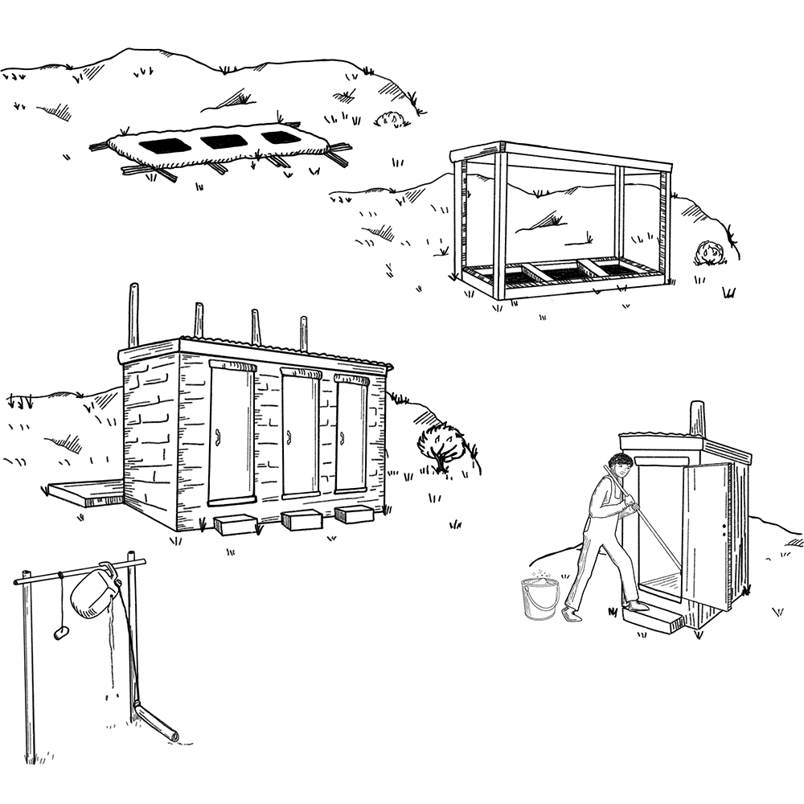

De nombreuses maladies (notamment la diarrhée , le choléra , la typhoïde et les hépatites E et A ) se propagent lorsque des matières fécales contaminent l’eau, les mains, les aliments ou les mouches, ou qu’elles pénètrent dans la bouche d’une autre personne. Ce type de transmission porte le nom de « fécale-orale ».
L’utilisation de latrines et l’élimination des excréments de manière appropriée peuvent sauver de nombreuses vies pendant une épidémie.
Pourquoi construire des latrines?
Lorsque tout le monde utilise des latrines, l’environnement est propre. Il est ainsi moins probable que les germes contenus dans les selles soient transmis à une autre personne et la rendent malade.
Les latrines contribuent à éviter que les sources soient contaminées par des germes. Les mouches ne peuvent pas facilement se poser sur des excréments et en transférer les germes à des aliments.
Utiliser des latrines permet de prévenir les maladies gastro-intestinales.
Il est important de placer aussi les selles des enfants et nourrissons dans les latrines. Leurs excréments contiennent tout autant de germes que les autres!
Lors d’une épidémie, construire des latrines et encourager la communauté à les utiliser sont des initiatives importantes pour éviter la propagation de la maladie.
De nombreux types de latrines, notamment les latrines à fosse, peuvent facilement être construites avec des matériaux locaux. Le type de latrines que vous construirez dépendra :
des préférences de la communauté ;
du type de sol et de la profondeur à laquelle se trouve l’eau (nappe phréatique) ;
de l’espace disponible dans la communauté ;
de l’emplacement des sources d’eau ;
du nombre de personnes qui utiliseront les latrines.
Demandez au point focal pour l’eau, l’assainissement et l’hygiène ou au responsable des volontaires des informations relatives à la construction de latrines.
Construire des latrines à des emplacements peu propices
Dans les zones urbaines, l’espace pour construire des latrines est parfois réduit. Il est difficile de creuser des latrines lorsque le sol est dur et rocheux, mince, instable, ou lorsque le niveau de l’eau est très haut (juste en dessous de la surface), par exemple après une inondation.
Dans ces situations, il vous reste plusieurs possibilités. Recherchez, en associant les membres de la communauté, une solution qui leur convient.
Vous pouvez envisager les possibilités suivantes: construire des latrines surélevées (munies de grandes cuves ou d’autres contenants recevant les excréments); utiliser des sacs en plastique; construire de petites latrines munies d’une cuve (taille adaptée pour une famille) ; construire des latrines à compost surélevées; utiliser d’autres formes de toilettes d’urgence.
Recommandations importantes concernant les latrines
Il est très important de se laver les mains après être allé aux toilettes pour éviter la propagation de la maladie. Toutes les latrines devraient disposer d’un endroit pour se laver les mains à proximité, qui fonctionne et soit muni d’eau et de savon.
Fournir le matériel de nettoyage anal adapté à l’usage local (pour s’essuyer ou se laver après être allé aux toilettes).
Si vous utilisez une latrine à tranchée, vous pouvez être amené à fournir de la terre pour couvrir les excréments.
Assurez-vous que les femmes et les filles se sentent en sécurité lorsqu’elles utilisent les latrines pendant la journée ainsi que la nuit. Des latrines séparées devraient être prévues pour les hommes et les femmes. Les latrines devraient être bien éclairées et verrouillables de l’intérieur.
La construction des latrines est la partie la plus facile. De nombreuses questions sociales et culturelles peuvent conduire la population à ne pas s’en servir. Trouvez ce qui poussera les habitants à utiliser les latrines et encouragez-les dans ce sens.
Les fosses et cuves des latrines se remplissent et doivent être vidées. La vitesse à laquelle elles se remplissent dépend du nombre de personnes qui les utilisent, de la taille de la fosse ou de la cuve, du type de sol, et du fait que les déchets et serviettes hygiéniques soient jetés dans la fosse ou non.

Messages communautaires
Voir les messages de la communauté suivants pour soutenir construction et entretien des latrines: